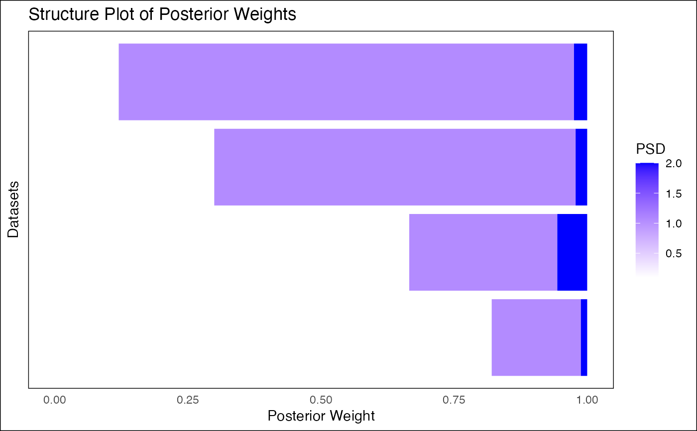
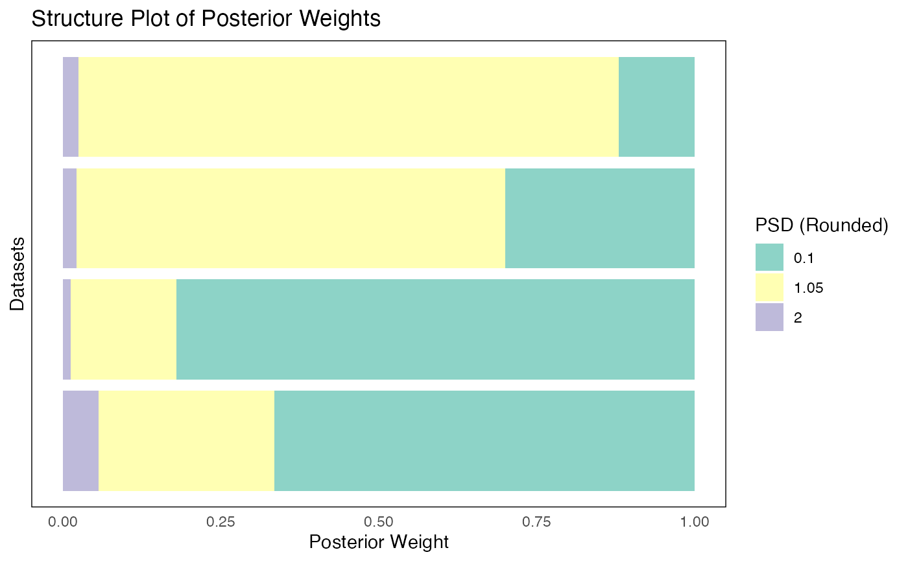

This function takes the output of fash_eb_est and generates a structure plot
visualizing the posterior weights for all datasets. It can display PSD values
as either continuous or discrete variables and optionally reorder datasets.
fash_structure_plot(
eb_output,
discrete = FALSE,
ordering = NULL,
selected_indices = NULL
)A list output from fash_eb_est, containing:
A numeric matrix of posterior weights (datasets as rows, PSD as columns).
A data frame of prior weights (not used in this plot).
A logical value. If TRUE, treats PSD values as discrete categories with distinct colors.
If FALSE, treats PSD values as a continuous variable with a gradient.
A character string specifying the method for reordering datasets. Options are:
No reordering (default).
Reorder by the mean of the posterior PSD.
Reorder by the median of the posterior PSD.
Reorder by the local false discovery rate (posterior probability of PSD = 0).
A numeric vector specifying the indices of datasets to display. If NULL, displays all datasets.
A ggplot object representing the structure plot.
# Example usage
set.seed(1)
grid <- seq(0.1, 2, length.out = 5)
L_matrix <- matrix(rnorm(20), nrow = 4, ncol = 5)
eb_output <- fash_eb_est(L_matrix, penalty = 2, grid = grid)
plot_cont <- fash_structure_plot(eb_output, discrete = FALSE, ordering = "mean")
plot_disc <- fash_structure_plot(eb_output, discrete = TRUE, ordering = "median")
print(plot_cont)

print(plot_disc)
